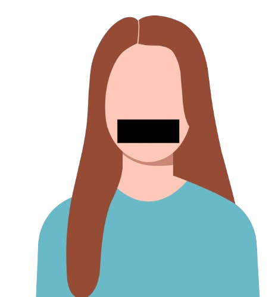

A análise dos dados oficiais de 2020 a 2026 revela os locais e períodos de maior vulnerabilidade feminina. Entender os números é o primeiro passo para políticas públicas eficientes.

A violência contra a mulher na Paraíba é um problema estrutural que avança silenciosamente por diferentes regiões do estado, alcançando inclusive municípios do interior. Diante desse cenário, o Observatório PB, iniciativa do programa Limite do Visível, surge com o propósito de transformar dados em conscientização e ação. Por meio de uma plataforma acessível e interativa, traduzimos informações complexas em análises visuais claras e compreensíveis, permitindo identificar padrões, regiões críticas e a evolução dos casos ao longo do tempo. Mais do que apresentar números, o observatório busca dar visibilidade a uma realidade frequentemente silenciada. Nosso objetivo é fortalecer a rede de proteção às mulheres, apoiar a formulação de políticas públicas e ampliar o acesso da sociedade a informações estratégicas sobre a violência de gênero na Paraíba.
O histórico de registros revela o aumento constante e a necessidade urgente de políticas de proteção.
Análise da natureza das ocorrências e do perfil etário das vítimas no estado.
Ranking dos tipos de crimes registados.
Distribuição das vítimas por faixa etária.
Os dados revelam que a violência não é linear o ano todo, apresentando padrões e picos em momentos específicos que exigem vigilância estratégica.
O mês com maior incidência de casos é Março[cite: 89].
Os dados revelam picos repetitivos de notificações em períodos festivos específicos no estado (como as semanas pós-Carnaval, festas de São João no interior e festas de fim de ano)[cite: 94].
Não há registro de quedas estruturais abruptas nos últimos 6 anos[cite: 96]. O volume absoluto de novas vítimas mantém uma média contínua mês a mês, provando que a violência é um fenômeno estrutural e diário, imune a variações sazonais comuns de outras dinâmicas criminais[cite: 96].
Canais de ajuda, infraestrutura de acolhimento e projetos ativos na Paraíba.
Para situações de flagrante, ameaça imediata ou socorro de urgência.
Atendimento nacional anônimo para denúncias, suporte e apoio psicológico.
Programa estatal focado no monitoramento e cumprimento de Medidas Protetivas.
Clique em qualquer ícone no mapa para visualizar os detalhes (Endereço, Contato e Horários).